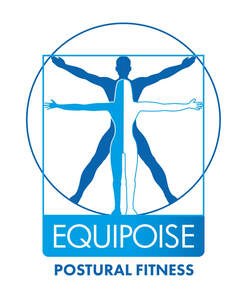

Trade Mark Journal No.2026/005 30 January 2026
UK00004325353 16 January 2026 (41,44)
Mark 1

Mark 2
- Class 41
- Health and fitness training; Health club services [health and fitness training]; Health and wellness training; Provision of educational health and fitness information; Physical health education; Physical fitness education services; Health education; Sports and fitness; Tuition in physical fitness; Physical fitness tuition; Sports and fitness services; Exercise [fitness] training services; Fitness and exercise training services; Education services relating to physical fitness; Physical fitness centre services; Personal fitness training services; Providing of training in the field of health care and nutrition; Exercise [fitness] advisory services; Physical fitness instruction; Exercise and fitness classes; Fitness and exercise instruction; Education services relating to health; Physical fitness instruction for adults and children; Provision of educational services relating to fitness; Educational services relating to physical fitness; Physical fitness training services; Fitness training services; Personal trainer services [fitness training]; Conducting physical fitness conditioning classes.
- Class 44
- Health care relating to naturopathy; Health screening; Medical health assessment services; Health consultancy; Health assessment services; Health care relating to osteopathy; Professional consultancy relating to health care; Medical testing services, namely, fitness evaluation; Provision of health care services; Fitness testing; Medical testing for fitness evaluation; Health screening services.
Timothy Goullet